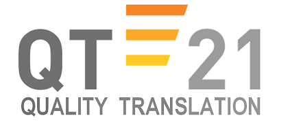

| Release of NMT system and training data | February 15, 2017 |
| Model submission deadline | May 1, 2017 (prior to news task test set release) |
| Start of manual evaluation | May 15, 2017 |
| End of manual evaluation (provisional) | June 4, 2017 |
| Paper submission, notification, camera-ready | same as the rest of the conference |
| Conference in Copenhagen | September 7-8, 2017 |
The training of one configuration of a neural MT system takes a few weeks and the currently used training criteria are rather basic, lacking a systematic evaluation and the common models are optimized not even towards BLEU. By organizing Neural MT Training Task, we hope to provide comparable conditions and encourage research into:
We will provide the participants with:
The participants are expected to train the model and submit the parameters. While doing so, they can modify the training data and the training parts of the neural MT system in any possible way.
We will use the fixed version of the NMT system to run the trained models on the official news test sets. The translations will be then manually evaluated along with the submissions to the standard News Translation Task.
The task is aimed at both experienced NMT researchers and newcomers. A valid submission can be achieved with minimal or no modifications of the provided system at all. Below, we provide suggestions what could people experiment with.
NMT Training Task was inspired by the past Tuning Tasks and serves as its replacement. In the last tuning task where phase-based MT components were fixed, it turned out that the few parameters of a log-linear model do not give enough room for interesting setup differences, especially when the model components are realistically large. This is certainly not the case for a neural model.
The package with the pre-processed training and validation data, and instructions how to start the baseline training is available for download:
There are two possible configurations (“tracks” of the task) to choose from,
depending on the size of GPU memory you can use: 4GB (the common size of
GeForce GTX 980) and 8GB (the common size of GeForce GTX 1080).
There are two versions of the main configuration file: config_{4,8}GB.ini.
The submissions will be evaluated with Neural Monkey 0.1.0 (included in the
package above).
In essence, we will need your variables.data file that gets created in the
output-*GB/ directory of Neural Monkey. Neural Monkey stores intermediate versions of the model
there, so you will probably want to send us the one linked under the name
variables.data.best.
It may be also interesting to compare the learning curves of your training
runs, so if you can, please provide us also with the file
events.out.tfevents.* created by TensorFlow during training.
To make a submission, upload your variable.data file (and
optionaly events.out.tfevents.* as well) somewhere, where it can
be downloaded from. Send the location of your variable files in an e-mail with
subject “NMT Training Task Submission” to both bojar@ufal.mff.cuni.cz and musil@ufal.mff.cuni.cz.
The e-mail should also contain the name under which the submission will be
published (eg. “Charles University, Glove Embeddings”). If you want, you can
also include any information you find relevant for meta-analysis of the task.
To sum up, your e-mail should contain for each submission you are making:
Submission deadline is May 1, 2017, before Training Task test sets are released.
The number of submissions you can make is not limited, but participants are required to contribute to the evalution process (see below). If you want to submit more models without increasing your commitments for the evaluation, you can submit some of your models as secondary. Secondary submissions will only be evaluated automatically, not manually.
Preliminary results will be published on this site. Participants will be informed via e-mail.
For each primary run submitted to the training task, the team promises to join the WMT manual evaluation and annotate at a share of the items. The exact involvement will be determined later but usually ranges from 4 to 8 hours of work. This contribution to the manual evaluation can be done in whichever language pair you can evaluate and is needed most.
You are invited to submit a short paper (4 to 6 pages) describing your NMT training technique. You are not required to submit a paper if you do not want to. If you don't, we ask that you give an appropriate description (a few paragraphs) or an appropriate reference describing your method to include or cite in the overview paper.
Neural MT is flexible and unexplored enough to offer quite a few interesting things to try:
More details and further ideas are listed in this live document.
We would very much appreciate if prospective participants shared their plans and perhaps even code modifications (e.g. reinforcement learning into which anyone could plug in their MT metric) during the task. If you are interested in this more collaborative form of participation, please:
Supported by the European Commision under the  project (grant number 645452)